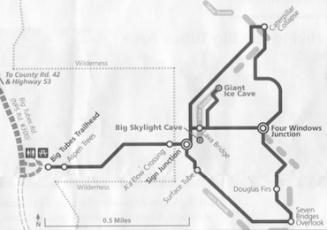
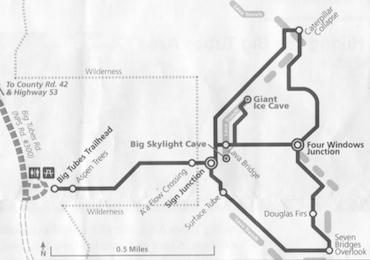

Hike New Mexico
w/ Tom & Ken
Big Tubes Area Walk
| Difficulty | Round-trip | Type | Elev. Chg. | Exposure | Wow Factor | Facilities | Seasons | Get There |
|---|---|---|---|---|---|---|---|---|
| Easy* | 1.5 miles | Out-and-back | 20 ft | Full sun | Massive lava | None | Not Winter | Directions |


 

- Jun 29, 2005: It looks the same in every direction
- Jun 29, 2005: Another unique lava feature
- May 23, 2016: When lava collapses...
- May 23, 2016: Huge lava trench
- https://www.flickr.com/photos/139088815@N08/27018773420/in/album-72157666437314513
- https://www.flickr.com/photos/139088815@N08/26687877053/in/album-72157666437314513
- https://www.flickr.com/photos/139088815@N08/27224034961/in/album-72157666437314513
- https://www.flickr.com/photos/139088815@N08/26687870873/in/album-72157666437314513
To get to the Big Tubes area, a four-wheel drive is recommended, as the road (between gradings) can be quite rough. It is impassable in wet or snowy weather. While CR 42 is in relatively good shape, roads diverging from it can be pitted, rutted and otherwise tricky.The Big Tubes area is loaded with collapsed lava tubes and lava bridges, but the walk/hike is arduous owing to the angular, cutting lava field - which also looks virtually the same in every direction, once the hiker enters the field. Although large cairns of lava rock are piled high to mark the way, if you diverge from the trail, it is very easy to get lost, as the author once did! There is no cell service in the location, it is exposed to full sun all day, and numerous flies and other insects are present. The features are very striking, but it would be wise to carry GPS along with water. The collapsed lava tubes are quite large and extensive in the area, and the resulting bridges are intriguing, though hard to photograph due to the shadows and contrast in the area. While the NPS site does not provide much coverage other than photos, check out the American Southwest link which does a better job.